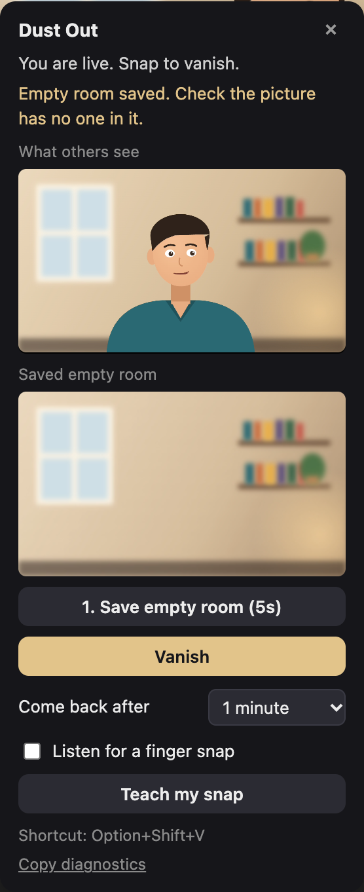

Install it in two minutes
Dust Out isn't in the Chrome Web Store yet, so you add it yourself. It's four steps.
- Downloaddust-out-extension.zip, then unzip it.
- Open extensionsPaste
chrome://extensionsinto Chrome's address bar. - Developer modeTurn on the switch in the top right corner.
- Load unpackedClick it and choose the
dust-out-extensionfolder.
That's it. Dust Out switches itself on in Teams and Google Meet. Pin it from the puzzle-piece menu if you want its button handy.
No extensions allowed? Use the bookmark on Teams.
The bookmark does not work on Google Meet. Meet blocks bookmarks from running, so clicking it there does nothing. For Meet, install the extension, or if that's blocked too, run it from the console.
Show your bookmarks bar (Cmd+Shift+B, or Ctrl+Shift+B on Windows) and drag the button onto it. In your Teams meeting, click the bookmark on the screen before you join.
Google Meet, and extensions are blocked too?
Run Dust Out from Chrome's developer console instead. Meet can't block that. You save it once as a console snippet, then start it with a shortcut before each call.
Once
- Click Copy the code above.
- Press Cmd+Option+J (Ctrl+Shift+J on Windows) to open the console.
- Press Cmd+Shift+P (Ctrl+Shift+P), type
snippetand choose Create new snippet. - Right-click the new snippet's name, choose Rename and call it Dust Out.
- Paste the code into it and press Cmd+S. If Chrome blocks the paste, type
allow pasting, press Enter, and paste again.
Each call
- Open the Meet link and stop on the screen before you join.
- Press Cmd+Option+J, click inside the developer tools, then press Cmd+P. In the search box that opens at the top of the developer tools (not the console line), type
!Dust Outand press Enter. The card appears. - Or open the snippet in the Sources tab and press Cmd+Enter.
- Close the console and join. Already in the call? Turn your camera off and on once.
No snippet option? Your company may have limited the developer tools. You can still paste the code straight into the Console tab on the screen before you join, each time.
This runs only in that tab and stops when you reload. It's still code your IT team hasn't approved, so use your judgement on a work laptop.
Use it in a call
Open the meeting in Chrome, not the desktop app, and join with your camera on. The Dust Out card appears at the bottom left.

- Save the empty room. Click Save empty room and step fully out of view for five seconds. Check the saved picture has no one in it, then sit back down.
- Snap. Snap your fingers, or press Option+Shift+V (Alt+Shift+V on Windows). Stay seated for about three seconds while you crumble.
- Leave. Everyone sees the empty room. Within a minute the dust flies back and you reform, or snap again to come back sooner.
What others see on the card is exactly what your call sends, so you can always check it's working. Keep your camera, lights and background filter as they were when you saved the room.
Snap for real
The shortcut always works. These let an actual finger snap do it.
By sound
Tick Listen for a finger snap, then Teach my snap and snap three times. It learns how your snap sounds on your mic and ignores talking and typing.
By hand
Click Hand gesture and allow the camera. Snap with your hand in view. Handy when you're muted or the room is loud.
Where it works
Any meeting you join in Chrome that sends video the usual browser way.
| Meeting app | Extension | Bookmark |
|---|---|---|
| Microsoft Teams | Works | Works |
| Google Meet | Should work. Not tried in a real call yet, so tell us how it goes. | Doesn't work. Meet blocks bookmarks. |
| Webex, Jitsi, Whereby, Slack huddles and others | Click the Dust Out toolbar button on the site and choose Turn on for this site, then reload before joining. Untested. | Might work, depending on the site's rules. Untested. |
| Zoom in the browser | Not supported yet | Not supported yet |
| Desktop apps | No. Dust Out runs in Chrome only. | |
Something's not working?
The card has a Copy diagnostics link. If none of these help, open an issue and paste what it copies.
The card never appears
Make sure the meeting is open in Chrome, not the desktop app, and your camera is on. With the extension, the card shows once your camera joins a call, or click the toolbar button and choose Show the card. With the bookmark, click it before joining.
I clicked the bookmark on Google Meet and nothing happened
That's expected: Google Meet blocks bookmarks from running any code, so the bookmark can't work there. Install the extension instead (four steps at the top of this page), then reload the Meet tab or rejoin. If extensions are blocked on your computer, run it from the console.
I snap and nothing happens
Save the empty room first, then try Option+Shift+V. If the shortcut works but snapping doesn't, run Teach my snap again in a quiet moment.
The card shows the dust, but my own video doesn't
Everyone else still sees it. Some meeting layouts show your self-view from a separate copy. Copy the diagnostics and open an issue so it can be fixed for that layout.
It says "Couldn't find you"
The saved empty room had you in it, or the camera moved since. Save it again and step fully out of view.
My work laptop won't let me turn on Developer mode
On Teams, use the bookmark. On Google Meet, run it from the console.